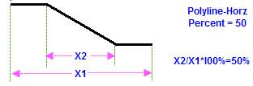
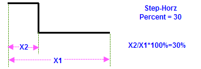

Die Verbindungslinie ist ein Linienobjekt, dass das Anmerkungsobjekt und seine Referenzposition verbindet. Dieses Kontrollkästchen bestimmt die Anzeige der Verbindungslinie. Die Verbindungslinien werden nur gezeigt, wenn der Versatz zwischen Anmerkungsobjekt und Datenpunkten eine bestimmte kritische Länge überschreitet. Die kritische Länge wird mit Prozentwert in dem Textfeld neben dem Kontrollkästchen definiert.
Kritische Länge = Prozentwert % * (Layerhöhe + Layerbreite)/2.
Bestimmen Sie die Farbe der Verbindungslinie, entweder durch eine Systemfarbe oder eine benutzerdefinierte Farbe.
Wählen Sie den Typ der Verbindungslinie. Die sieben Optionen sind Gerade, Polylinie-Horiz., Polylinie-Vert., Stufe-Horiz., Stufe-Vert., Horizontal und Vertical. Polylinie-Horizontal und Polyline-Vertikal erstellen drei Segmentlinien, wobei das mittlere Segment angewinkelt ist. Stufe-Horizontal und Stufe-Vertikal erstellen drei Segmentlinien, wobei das mittlere Segment im rechten Winkel steht.
Wenn Polylinie-Horiz. oder Polylinie-Vert. gewählt ist, können Sie den Prozentanteil des horizontalen oder vertikalen Abstands zwischen zwei Wendepunkten im Textfeld nach der Auswahlliste Verbinden ändern (siehe das Bild unten (1)). Entsprechend können Sie, wenn Stufe-Horiz. oder Stufe-Vert. gewählt ist, die Position des Wendepunkts nach dem Prozentanteil des horizontalen oder vertikalen Abstands im Textfeld nach der Auswahlliste Verbinden festlegen (siehe das Bild unten (2)).
|  |  |
|
Bild(1) |
Bild(2) |
Legen Sie die Breite der Verbindungslinie fest.
Wählen Sie den Linienstil der Verbindungslinie.
Geben Sie einen Wert ein, um den Versatz zwischen dem Diagrammpunkt und dem angrenzenden Punkt der Verbindungslinie zu definieren. Der Wert ist in % der Schrifthöhe des Texts angegeben, die unter der Höhe der Schriftart auf der Registerkarte Text definiert ist.
Geben Sie einen Wert ein, um den Versatz zwischen dem angrenzenden Punkt der Verbindungslinie und dem Textrahmen zu definieren. Der Wert ist in % der Schrifthöhe des Texts angegeben.
| Form | Legen Sie fest, ob die Pfeilspitze für die Verbindungslinie und die Form der Pfeilspitze verwendet werden soll. |
|---|---|
| Richtung | Wenn die Form der Pfeilspitze ausgewählt ist, ist diese Option verfügbar. Sie können die Richtung der Pfeilspitze festlegen: Text in Zeichnung, Zeichnung in Text und Beide. |
| Breite | Wenn die Form der Pfeilspitze ausgewählt ist, ist diese Option verfügbar. Legen Sie die Breite der Pfeilspitze fest. |
| Länge | Wenn die Form der Pfeilspitze ausgewählt ist, ist diese Option verfügbar. Legen Sie die Länge der Pfeilspitze fest. |